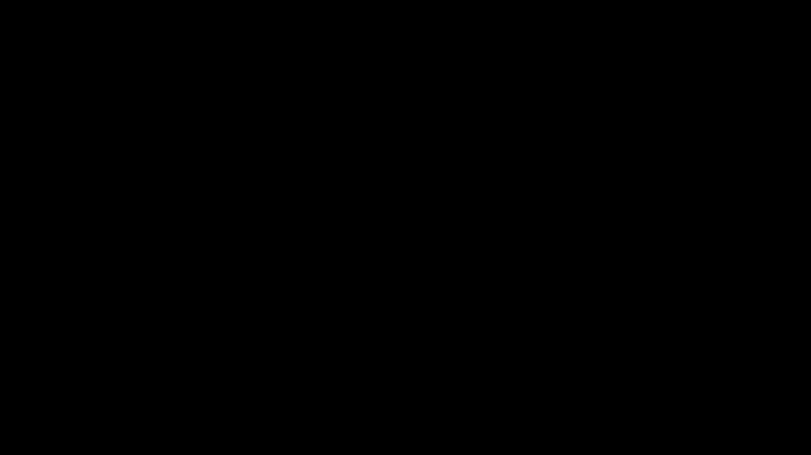

QJL: 1-Bit Quantized JL Transform for KV Cache Quantization with Zero Overhead

| Architecture Type | Randomized Sketching for Transformer KV Cache Compression |
|---|---|
| Key Innovation | 1-bit sign quantization after JL transform enables zero-overhead key cache compression with unbiased inner product estimation |
| Performance Metric | Over 5x KV cache memory reduction at 3-bit equivalent with no accuracy degradation across multiple LLMs and NLP tasks |
| Computational Efficiency | Data-oblivious, no tuning required, parallelizable CUDA implementation; scales logarithmically with context length |
| Venue | AAAI Conference on Artificial Intelligence |
| Year | 2024 |
| Citations | 26 |
| DOI | Link |
QJL (Quantized Johnson-Lindenstrauss) is a KV cache quantization method for large language models, introduced by Zandieh, Daliri, and Han (2024), that achieves zero memory overhead by eliminating the need to store per-block quantization constants. The method applies a Johnson-Lindenstrauss random Gaussian projection to key embeddings and retains only the sign bit of each projected coordinate, producing a 1-bit sketch that enables unbiased estimation of attention score inner products. When quantizing LLM KV caches to just 3 bits total, QJL achieves more than a fivefold reduction in KV cache memory without loss in model accuracy, supported by a lightweight CUDA kernel for efficient GPU execution.
The Memory Overhead Problem in KV Cache Quantization
Deploying large language models at scale requires serving millions of concurrent sessions, each maintaining its own KV cache storing all previously generated key and value embeddings. As context lengths grow to 32k, 128k, or even million-token scales, this cache becomes the dominant memory consumer during inference. Figure 0
Traditional quantization methods address this by storing KV embeddings at reduced bit-width. However, all existing methods used block quantization: values are grouped into blocks and a zero point and scale are computed and stored per block. These normalization constants, stored in full float16 precision, add approximately 1–2 bits per quantized number depending on block size.
At 4-bit quantization with 128-element blocks, the zero point and scale add 0.25 bits per element, bringing the effective cost to 4.25 bits. For aggressive 2-bit quantization, the overhead becomes proportionally much larger. QJL's central design goal is to quantize KV keys to as few bits as possible while storing zero additional bookkeeping data.
The enabling insight is that if the quantization scheme is data-oblivious—using a fixed predetermined transform rather than one calibrated to each block—there are no statistics to store. The challenge is designing a data-oblivious scheme that still provides accurate inner product estimates for attention score computation.
Johnson-Lindenstrauss Transform and Sign Quantization
The Johnson-Lindenstrauss (JL) transform is a classical result in dimensionality reduction: multiplying a vector by a random Gaussian matrix $$S \in \mathbb{R}^{m \times d}$$ approximately preserves inner products. For any two vectors $$q$$ and $$k$$, the inner product $$\langle Sq, Sk \rangle / m$$ approximates $$\langle q, k \rangle$$ with variance scaling as $$1/m$$.
QJL's key insight is that applying the JL transform to a key vector $$k$$ and then quantizing $$Sk$$ to just the sign bits ($$\pm 1$$ per coordinate), while applying the same JL transform to the query vector without quantization, still yields an unbiased estimator of $$\langle q, k \rangle$$. The estimator uses the inner product $$\langle Sq, \text{sign}(Sk) \rangle$$ scaled by an analytically known constant.
Lemma 3.2 proves that $$\mathbb{E}[\langle Sq, \text{sign}(Sk) \rangle]$$ is proportional to $$\langle q, k \rangle$$. The key mathematical mechanism is the arc-sine law: for jointly Gaussian $$(z_1, z_2)$$ with correlation $$\rho$$, $$\mathbb{E}[z_1 \cdot \text{sign}(z_2)]$$ is proportional to $$\rho$$ via the Grothendieck inequality. This arcsin relationship is the theoretical heart of QJL.
Lemma 3.5 further shows that the variance of the QJL estimator is only $$\pi^2/4 \approx 2.47$$ times larger than the variance of the standard JL inner product estimator. The accuracy penalty of 1-bit quantization is a small constant factor rather than catastrophic.
Asymmetric Estimator Design for Attention Scores
A critical design choice in QJL is its asymmetric treatment of queries and keys. Key embeddings are processed through the full QJL pipeline: JL transform followed by sign quantization. Query embeddings are only JL-transformed but not quantized. This asymmetry is essential for maintaining unbiasedness.
If both query and key were sign-quantized, the resulting estimator would be proportional to cosine similarity, which preserves angular information but loses magnitude information. Attention computation requires knowing approximate magnitudes to produce meaningful softmax weights; the asymmetric design preserves this via the unquantized query projection.
Theorem 3.6 demonstrates that QJL-estimated attention scores satisfy a relative distortion bound: the softmax output computed from QJL-estimated scores differs from the true softmax by at most $$\varepsilon$$ in $$\ell_1$$ norm with high probability when JL dimension $$m = O(\varepsilon^{-2} \log n)$$. The logarithmic scaling in context length $$n$$ means per-token bit count remains essentially constant even for very long sequences.
The value cache uses standard per-token quantization since value vectors have more uniform distributions across channels compared to keys, making standard block quantization efficient for values.
CUDA Implementation and Runtime Efficiency
QJL's practical utility depends on efficient GPU implementation. The authors developed a custom CUDA kernel for the QJL sketch and its inner product estimator. Rather than storing the full $$m \times d$$ projection matrix $$S$$, the kernel uses a seeded pseudo-random number generator to regenerate $$S$$ on-the-fly, avoiding explicit storage of $$S$$.
The inner product estimation $$\langle Sq, \text{sign}(Sk) \rangle$$ requires multiplying $$S$$ by the query vector $$q$$, then a dot product with binary $$\text{sign}(Sk)$$. The binary nature of $$\text{sign}(Sk)$$ enables efficient bit-manipulation operations and integer dot products, significantly faster than floating-point operations.
During autoregressive generation, each new token must compute attention against all cached keys. The sequential access pattern makes the operation memory-bandwidth-bound. QJL reduces cache size by over fivefold, proportionally reducing the memory bandwidth required per generated token.
Despite the additional JL transform computation, overall generation speed with QJL exceeds uncompressed attention because bandwidth savings outweigh compute overhead—consistent with the known memory-bandwidth-bound nature of autoregressive LLM inference.
Empirical Evaluation Across LLMs and NLP Tasks
QJL was evaluated on LLaMA-2 (7B, 13B, 70B), Mistral 7B, and Falcon 7B across language modeling perplexity, question answering (TriviaQA, NaturalQuestions), and summarization. At an effective 3 bits per key element, QJL achieves no statistically significant accuracy degradation on any evaluated task.
Compared to KIVI and KVQuant, QJL achieves better or equal accuracy at lower effective bit counts because it avoids overhead of stored quantization constants. All bits are used for actual key content, none for bookkeeping.
The method generalizes across different tasks and context lengths without per-model or per-task tuning. This data-oblivious property is valuable in production where models serve diverse workloads—a single fixed configuration applies across all usage patterns.
Ablation studies confirm that unbiasedness of the inner product estimator is the critical property. Biased alternatives such as symmetric sign quantization of both query and key show meaningful accuracy degradation, particularly on tasks sensitive to softmax saturation.
Concept Breakdown
A random Gaussian projection $$S \in \mathbb{R}^{m \times d}$$ mapping high-dimensional vectors to lower-dimensional space while approximately preserving inner products. The JL guarantee states that inner products of projections are unbiased estimators of originals with variance $$1/m$$.
After applying the JL transform to key $$k$$ to get $$Sk \in \mathbb{R}^m$$, QJL retains only the sign of each coordinate: $$\text{sign}(Sk) \in \{+1, -1\}^m$$. This extreme compression reduces cache from 16-bit floats to 1 bit per projected coordinate with no stored scale or zero point.
QJL uses an asymmetric design where keys are sign-quantized but queries are only JL-transformed. The estimator $$\langle Sq, \text{sign}(Sk) \rangle$$ scaled by $$\pi\|k\|_2/(2m)$$ is provably unbiased for $$\langle q, k \rangle$$. Asymmetry is essential: sign-quantizing both would lose magnitude information.
QJL uses a fixed, predetermined random matrix $$S$$ independent of input data. Unlike block quantization methods that compute and store data-dependent statistics per block, QJL's transform parameters are generated from a fixed random seed and never stored, eliminating all per-block overhead.
Theorem 3.6 shows that maintaining $$\varepsilon$$-accurate attention scores requires JL dimension $$m = O(\varepsilon^{-2} \log n)$$ where $$n$$ is context length. Per-token bit count grows only logarithmically with context length—extremely slowly compared to constant growth in other methods.
Mathematics
QJL sketch definition
| Symbol | Meaning |
|---|---|
| $$$S$$$ | random Gaussian projection matrix $$m \times d$$ |
| $$$k$$$ | $$d$$-dimensional key embedding vector |
| $$$m$$$ | number of random projections (sketch dimension) |
Unbiasedness of QJL inner product estimator (Lemma 3.2)
| Symbol | Meaning |
|---|---|
| $$$q$$$ | query embedding vector |
| $$$k$$$ | key embedding vector |
| $$$S$$$ | shared JL projection matrix |
Variance bound of QJL vs standard JL (Lemma 3.5)
| Symbol | Meaning |
|---|---|
| $$$\pi^2/4$$$ | the overhead factor approximately 2.47 from 1-bit quantization |
Attention score accuracy guarantee (Theorem 3.6)
| Symbol | Meaning |
|---|---|
| $$$\hat{a}$$$ | vector of QJL-estimated attention scores |
| $$$a$$$ | true attention scores |
| $$$n$$$ | context length |
| $$$\varepsilon$$$ | accuracy tolerance parameter |